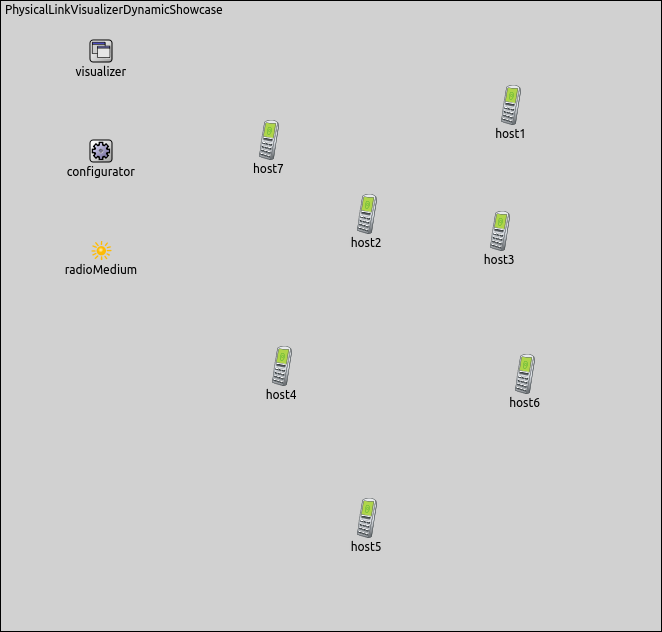

In wireless networks, a received frame sometimes is not processed in the receiver network node as a result of some problem. At wireless networks a typical problem can be that the signal becomes too weak while spreading through the radio medium and the receiver can not process the frame. It would be useful to be able to observe frames that are received correctly to follow physical link activity between nodes.
INET provides a visualizer, that shows between which nodes there is physical link activity. If physical link activity is visualized between two nodes that means the observed frame passes through the physical layer of the receiver node. On the other hand, by using physical link activity visualization we can display all nodes which are able to receive frames directly from the sender node.
The showcase consists of three simulations each demonstrating different features of physical link visualization.
INET version: 3.6
Source files location: inet/showcases/visualization/physicallinkactivity
In INET, physical link activity can be visualized by including a PhysicalLinkVisualizer module in the simulation. Adding an IntegratedVisualizer module is also an option, because it also contains a PhysicalLinkVisualizer module. Physical link activity visualization is disabled by default, it can be enabled by setting the visualizer's displayLinks parameter to true.
PhysicalLinkVisualizer observes frames that pass through the physical layer, i.e. are received correctly.
The activity between two nodes is represented visually by a dotted arrow which points from the sender node to the receiver node. The arrow appears after the first frame has been received, then gradually fades out unless it is refreshed by further frames. Color, fading time and other graphical properties can be changed with parameters of the visualizer.
By default, all packets, interfaces and nodes are considered for the visualization. This selection can be narrowed with the visualizer's packetFilter, interfaceFilter, and nodeFilter parameters.
The following example shows how to enable the visualization of physical link activity with its default settings. In the first example, we configure a simulation for an ad-hoc wireless network. This simulation can be run by choosing the EnablingVisualization configuration from the ini file.
The network contains two AdhocHosts, source and destination. The linkVisualizer's type is PhysicalLinkVisualizer.

In this configuration, source pings destination. Physical link activity visualization is enabled by setting the displayLinks parameter to true:
The following animation shows what happens when we start the simulation:
At the beginning of the video, a red strip appears and moves from source to destination. This strip is the standard OMNeT++ animation for packet transmissions, and has nothing to do with PhysicalLinkVisualizer. A blue dotted line also appears at the same time. It can be ignored, as it is also part of the standard OMNeT++ packet animation. When the frame is received in whole by destination (the red strip disappears), a dotted arrow is added by PhysicalLinkVisualizer between the two hosts, indicating physical link activity. The frame's name is also displayed on the arrow. Here, the arrow fades out quickly, because the fadeOutTime parameter of the visualizer is set to a small value.
In complex networks with many nodes and several protocols in use, it is often useful to be able to filter network traffic, and visualize only the part of the traffic we are interested in.
The following example shows how to set packet filtering. This simulation can be run by choosing the Filtering configuration from the ini file.
We configure a wifi infrastructure mode network for this showcase. The network consists of one accessPoint and three wirelessHosts (source, destination and host1). In this configuration, the source host pings the destination host. The host1 node does not generate any traffic except for connect to accessPoint.
The communication range of the nodes is chosen so that source and destination cannot reach each other directly. The communication range of source is visualized as blue circle in the following picture.

For this network, the type of the visualizer is IntegratedVisualizer. Physical link activity visualization is filtered to display only ping traffic. Other frames, e.g. Beacon frames and ACK frames, are not visualized by PhysicalLinkVisualizer.
We use the following configuration for the visualization:
The following video shows what happens when the simulation is run.
You can see that although there are also ACK, Beacon and ping frames in the network, PhysicalLinkVisualizer displays only the latter, due to the presence of the packetFilter parameter. The ping frames travel between source and destination through accessPoint. The ping frames which are sent by source or accessPoint are received by host1 too. This is, because host1 is within the communication range of source and accessPoint, so host1 is able to receive the ping frames.
The goal of this simulation is visualizing dynamically changing physical link activity in a mobile wireless environment. This simulation can be run by choosing the Mobile configuration from the ini file.
The network consists of seven nodes (host1..host7) that are AdhocHost type. The nodes are placed randomly on the playground and will also randomly roam within predefined borders. The communication range of nodes is reduced so that nodes can typically only communicate with some closer nodes.
The nodes send UDP packets in every second by an UDPBasicApp application. The packets' name are set to Broadcast. The nodes receive the Broadcast packets by an UDPSink application.
The visualizer's packetFilter parameter is set to display only Broadcast traffic.
Here is the configuration of the visualization:
Here is what happens, when we run the simulation:
The visualizer shows "connection graphs" whose vertices are the hosts, and each edge is physical link activity between two hosts. It is changing between which nodes there is physical link activity, as a result of the nodes' movement.
This example only demonstrated the key features of physical link visualization. For more information, refer to the PhysicalLinkVisualizer NED documentation.